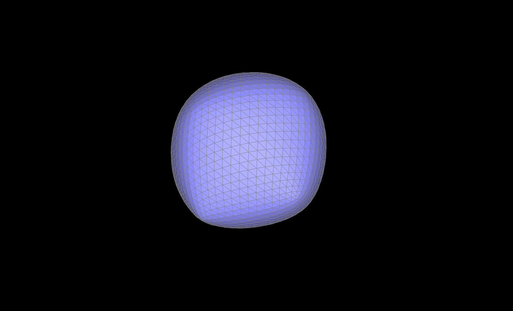

Part 1
- Briefly explain de Casteljau's algorithm and how you implemented it in order to evaluate Bezier curves.
- de Casteljau’s algorithm is a recursive algorithm where in each step we interpolate between each pair of points to get n-1 points. We keep doing this until we are down to one point, which is the point on the Bezier curve. The interpolation is given by p0(t) = (1-t)p0 + tp0. We implemented this recursive step by performing this calculation for each pair of points, giving us one less point at each step of the algorithm.
- Take a look at the provided .bzc files and create your own Bezier curve with 6 control points of your choosing. Use this Bezier curve for your screenshots below.
We chose the following Bezier curve
- Show screenshots of each step / level of the evaluation from the original control points down to the final evaluated point. Press E to step through. Toggle C to show the completed Bezier curve as well.

- Show a screenshot of a slightly different Bezier curve by moving the original control points around and modifying the parameter t via mouse scrolling.

Part 2
- Briefly explain how de Casteljau algorithm extends to Bezier surfaces and how you implemented it in order to evaluate Bezier surfaces.
- We can extend de Casteljau’s algorithm to Bezier surfaces by using 4x4 control points to correspond to 4 4x1 Bezier Curves and then use that to evaluate Bezier. The 4 movable points on the Bezier Curve are essentially enabling us to trace out a movable 2d surface. Specifically, we implemented it by using de Casteljau to evaluate u on the 4 curves and then using 1D de Casteljau (evaluate1D) to evaluate for v.
- Show a screenshot of bez/teapot.bez (not .dae) evaluated by your implementation.
Part 3
- Briefly explain how you implemented the area-weighted vertex normals.
- To calculate a given vertex normal, we iterate over all the triangle faces incident to the vertex. For each triangle, we calculate the normal vector to that face by taking a cross product between two sides of the triangle. This gives us a normal vector to the face, and the magnitude of the vector is also proportional to the area of the face (because of the way cross product works). Thus by summing the normal vectors for each incident face we get an area-weighted sum. Finally we normalize the vector to unit length.
- Show screenshots of dae/teapot.dae (not .bez) comparing teapot shading with and without vertex normals. Use Q to toggle default flat shading and Phong shading.
Part 4
- Briefly explain how you implemented the edge flip operation and describe any interesting implementation / debugging tricks you have used.
- We referred to this very helpful diagram we found on Piazza. This gave us the mapping of the half-edges, edges, vertices, and faces before and after the edge flip. Then it was just a matter of updating the fields of all the mesh elements. We also added a boundary check so that if either face is a boundary face we just return immediately.
- Show screenshots of a mesh before and after some edge flips.
- Write about your eventful debugging journey, if you have experienced one.
- Our debugging for this part was mostly uneventful/uninteresting as we just double checked the Piazza diagram to make sure we were updating the proper fields. Debugging and fixing our issues didn’t take that much time and effort because we grouped our HalfEdgeiter, VertextIter, etc. changes in a way that made it easy to figure out where we went wrong.
Part 5
- Briefly explain how you implemented the edge split operation and describe any interesting implementation / debugging tricks you have used.
- Similar to the edge flip operation, we began by drawing out how all the mesh elements are affected by an edge split operation. Then it was just a matter of coding up this mapping. We also added a boundary check where we return immediately if either face is a boundary face.
- Show screenshots of a mesh before and after some edge splits.
- Show screenshots of a mesh before and after a combination of both edge splits and edge flips.
Part 6
- Briefly explain how you implemented the loop subdivision and describe any interesting implementation / debugging tricks you have used.
- We implemented loop subdivision by finding the new positions for the vertices through the use of the original mesh (we implemented this with a for loop). We stored this in the newPosition field of the VectorIter variables we iterated through. Next, we iterated through all the edges and split them using the splitEdge function. We had some issues with infinite loops at this point but we were able to solve it by changing the conditions when we were splitting the edges. Our implementation for that section of loop subdivision consisted of a for loop that iterates through the total number of mesh edges we had with a nested while loop inside that sets the isNew field while the halfEdge condition is True. Subsequently, we went through all the edges and flipped the edge (using the flipEdge function) if it was a new edge and if the two vertices of the half edges are not both new or not both old (v1->isNew != v2->isNew) . Finally, we repositioned the vertices on the new mesh by setting the conditions using a for loop iterating through all the VertexIters.
- Take some notes, as well as some screenshots, of your observations on how meshes behave after loop subdivision. What happens to sharp corners and edges? Can you reduce this effect by pre-splitting some edges?
- The sharp corners and edges become rounder/smoother after we implemented loop subdivision. This phenomenon directly occurs as a result of loop subdivision because the goal of loop subdivision is to make the mesh more uniformly sampled.
- If one observes the handle of the teapot below loop subdivision causes it to transition from a more triangular shape to one that is more reminiscent of a half ellipse.
- A couple observations of interest for the cube example is that the cube starts looking less like a cube and more like a ball as we upsample it. It also appears to be asymmetrical with random bulges occurring where the corners of the cube used to be.
- Pre-splitting some edges (especially with the cube example) in a more symmetric manner would cause the cube to remain cube-shaped since it looks like the asymmetries in the mesh are causing the loop subdivision to produce an asymmetrical cube as we upsample.

- Load dae/cube.dae. Perform several iterations of loop subdivision on the cube. Notice that the cube becomes slightly asymmetric after repeated subdivisions. Can you pre-process the cube with edge flips and splits so that the cube subdivides symmetrically? Document these effects and explain why they occur. Also explain how your pre-processing helps alleviate the effects.

- If you have implemented any extra credit extensions, explain what you did and document how they work with screenshots.
- We didn’t implement any extra credit extensions